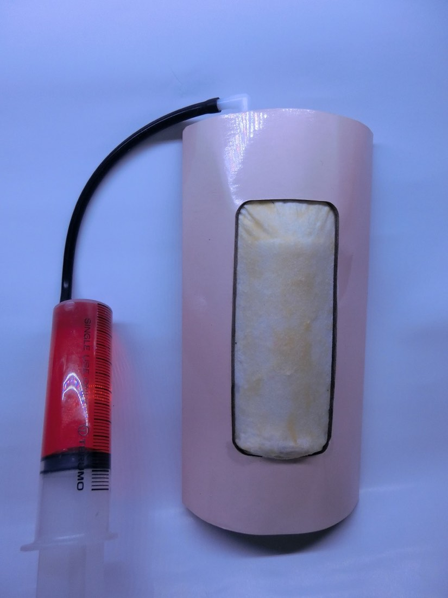
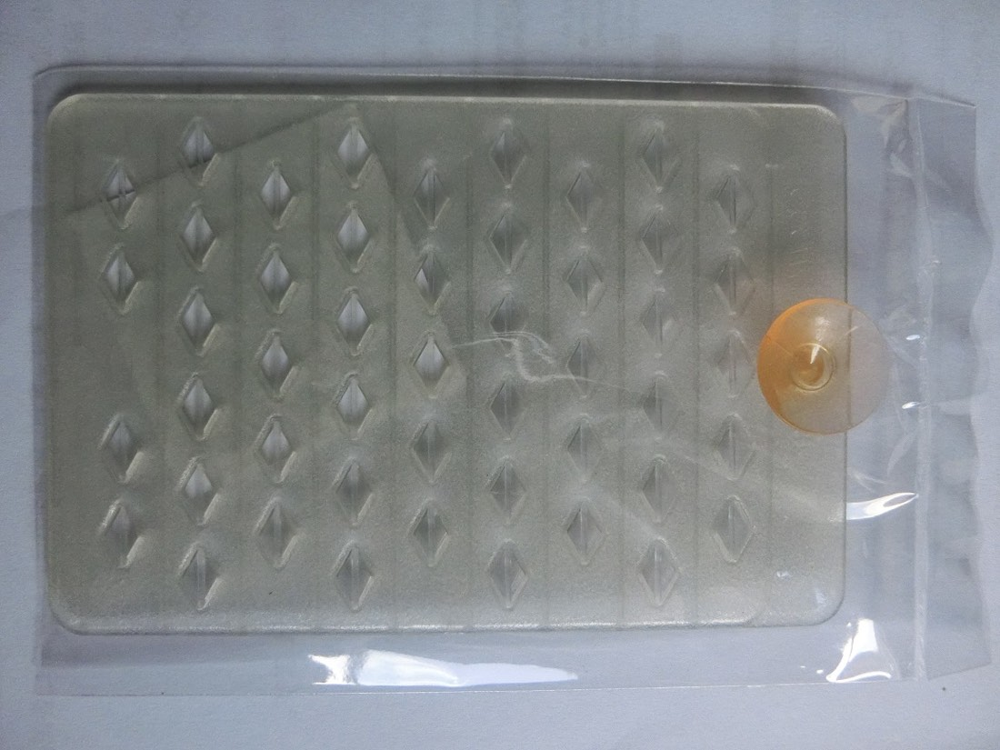
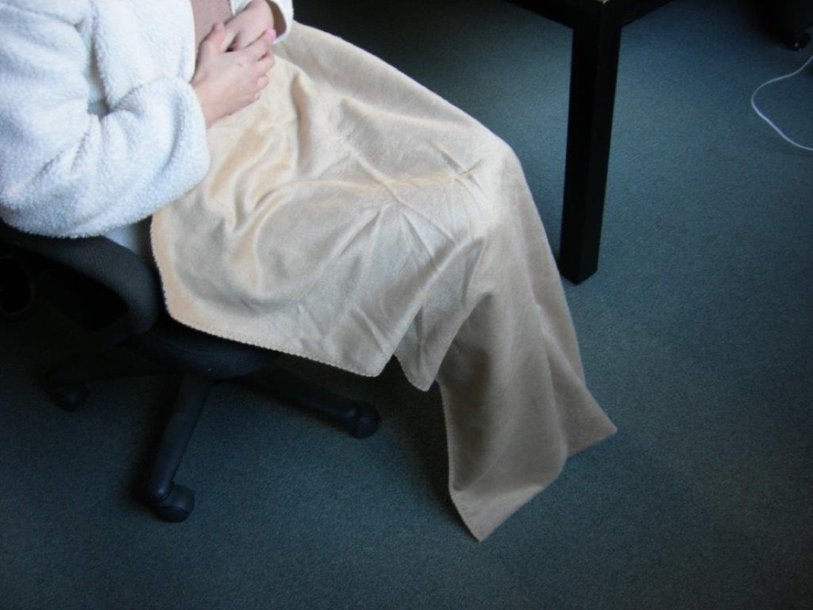
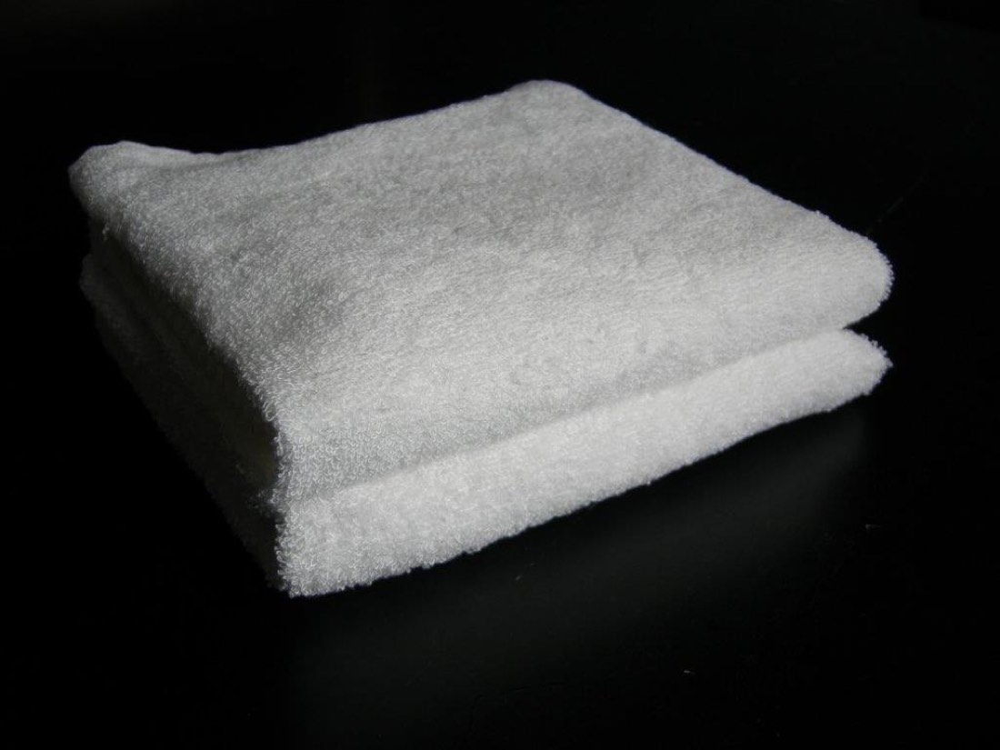

医療用機器
高リアリティの縫合シミュレータ
新素材（竹繊維）を使用した縫合シミュレータ。温めた疑似血液を注入することで、 より本物に近い人感を再現します。傷あとは修復でき、繰り返し使用できます。 材料は天然素材のため、一般ゴミとして廃棄できます。
- 素材
- 竹繊維（新素材）
- 特徴
- 疑似血液の注入で人感を再現／傷あと修復可・繰り返し使用可
- 廃棄
- 天然素材のため一般ゴミとして廃棄可
自治医科大学との共同出願中
ハードもソフトも、金型も梱包材も。工程ごとに発注先を分けずに済みます。
協力工場：国内2社／海外（中国）2社
産業用機器、農業用機器、医療用機器、自動車開発補助機器、ペット用品、TOY等での 開発実績があります。ここでは自社商品を中心に載せています。

医療用機器
新素材（竹繊維）を使用した縫合シミュレータ。温めた疑似血液を注入することで、 より本物に近い人感を再現します。傷あとは修復でき、繰り返し使用できます。 材料は天然素材のため、一般ゴミとして廃棄できます。
自治医科大学との共同出願中

繊維製品

繊維製品

光触媒応用品
自社で特許取得した光触媒薬剤を担持したプレートにより、水の浄化を行います。
特許取得
現在取り組んでいる開発です。
スマホ（iPhone）とBluetooth（BLE）を使い、制御系周辺機器との通信制御を おこなうシステムを開発しています。
保温性、肌触りの良さ、抗菌性などの特徴を生かし、 靴下・タオル・膝掛け等を開発しています。
商品企画から設計、量産化、納品まで責任を持って行います。最終製品までの 成形品設計、パッケージ、梱包材、量産工場の品質管理、量産の生産管理まで 一貫したシステムで対応します。完全製品の状態で出荷します。
産業用機器、農業用機器、医療用機器、自動車開発補助機器、ペット用品、 TOY等での開発実績があります。また竹繊維を使った商品の開発も行っています。
中国の弊社委託工場での生産に対応しています。協力工場は国内2社、 海外（中国）2社です。中国からの商品の紹介、中国生産品の輸入品の 品質管理もお引き受けします。
スマホアプリ・マイコンソフトの開発に対応しています。制御機器のデジタル・ アナログ・ハード設計、回路設計、基板設計、車載用試験用機器のハード・ ソフト開発まで手がけます。
肌触りが良く（摩擦係数が低い）、保温性が高く、吸水率が高い （吸水試験で1秒以内に沈む）、静電気が帯びにくく、嫌な匂いがつかない という特徴があります。ホルムアルデヒドは基準値以内クラスIIで、 栃木県産業技術センター足利繊維試験所の試験結果によるものです。
「こういうものを作りたい」という段階からご相談ください。 企画・設計から量産、梱包までまとめてお引き受けします。
FAX 028-660-0155